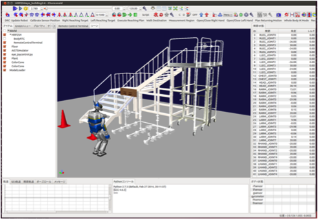
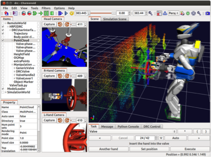

About Choreonoid¶
In this chapter, we will explain about the Choreonid.
What is Choreonoid?¶
Choreonoid is a open source integrated GUI software for robotics. It also have physics simulation function and motion editing function as a default and you can also implement your own function as a plugin.
The term Choreonoid is named from “Choreograph” and “Humanoid”.
Development of Choreonoid is started in 2007 as motion editing software sponsored by NEDO. From version 1.4 simulation function of OpenHRP3 is integrated.
Main usage of Choreonoid¶
Choreonoid is a integrated GUI platform and can also applied to various applications using extension functions.
Robot simulator
Used as the official simulator for JVRC (Japan Virtual Robotics Challenge).
Remote control interface
In DRC Finals competition, AIST-NEDO team has used Choreonoid as an interface to remote control the robot.
Motion editing of robot
The robot motion can be created as if we are editing CG character by using automatic balance control function of Choreonoid.

Simulation function of Choreonoid¶
- Dynamics simulation
- Rotating joint, linear joint, crawler joint
- AIST engine, u-osaka engine, gazebo engine can be used selectively.
- Sensor simulation
- Camera, LRF, RGBD camera, force sensor, gyro, acceleration sensor.
- Connection with robot middlewares
- Original format
- RT-middleware
- ROS (under development)
Meaning of using simulator in robot development¶
Simulator can be used in many phases of robot development.
- Designing new robot
- Various designs can be considered without creating real robot, realize short and low cost development.
- Development of control software of robot
- Develop without care of physical accident of real robot.
- Plural developer can develop in parallel.
- Control training of robot
- Develop without care of physical accident of real robot.
- Plural operator can train in parallel even the number of robot is small.
- Inspection of work plan of robot
- Work plan of robot can be evaluated in advance.